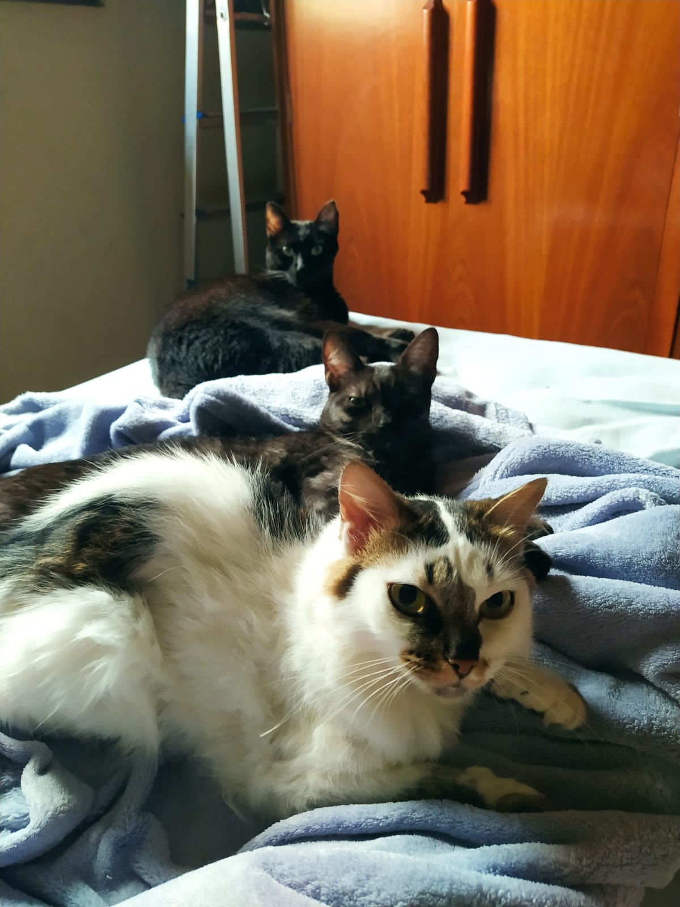
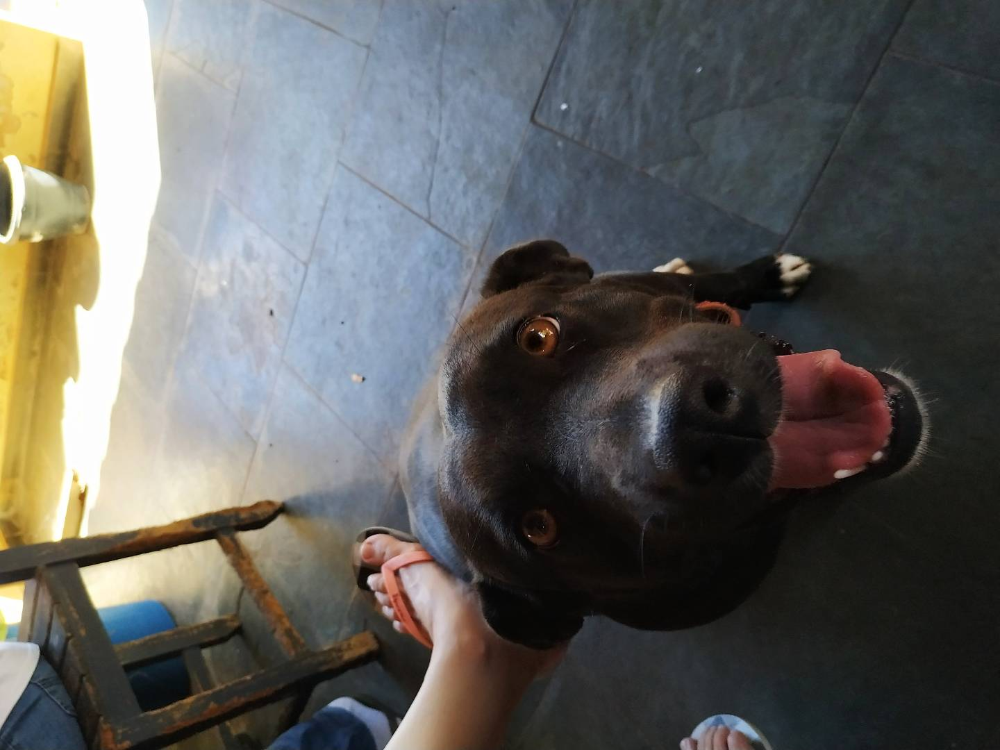
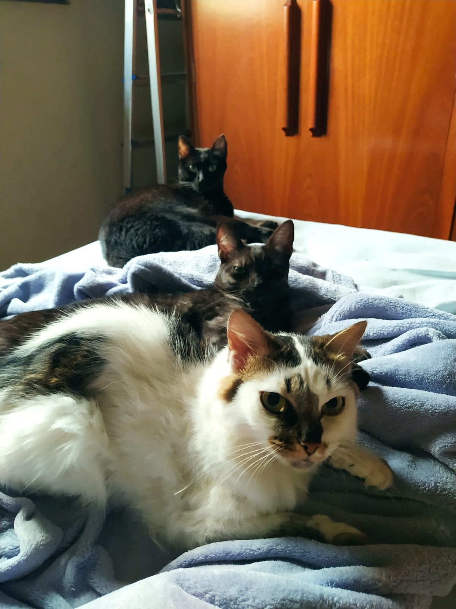
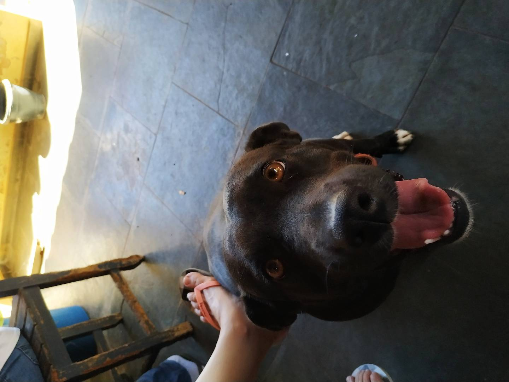
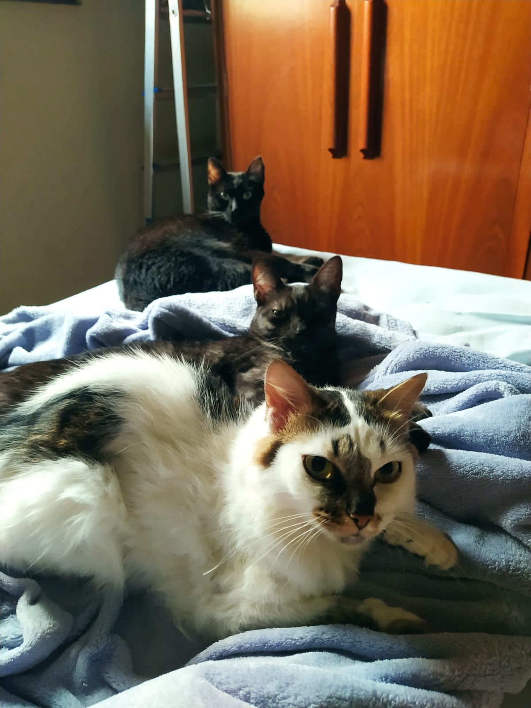
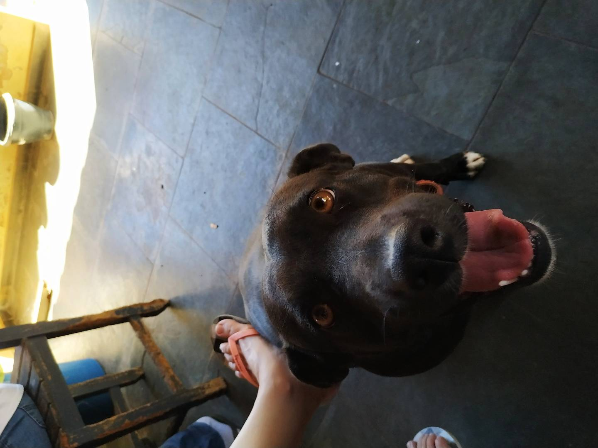

Meus bichinhos
Olá, meu nome é Juliana Ando de Cezare. Tenho 26 anos, moro na cidade de Campinas - SP desde 2017 e sou apaixonada por essa cidade.
Amo todos os animais, mas meus favoritos são os gatos. Tenho 3 fofinhos que se chamam Molly, Rochelly e Raul e dois cachorros, Malala e Robinho.
Sou formada em Odontologia pela PUC-Campinas e, no momento, estou em transição de carreira para a área tech.
Fiz alguns cursos rápidos e, em outubro de 2022, iniciei minha trajetória na Trybe como estudante de Desenvolvimento Web.
Durante um tempo, tentei associar minha rotina de trabalho com os estudos, mas não senti que estava valendo a pena.
Por isso, resolvi me dedicar 100% ao curso para me aprofundar ainda mais como Dev Full Stack.
Atuando como Cirurgiã-Dentista


Meus bichinhos